Öneriler
6 GB ekran kartında, OBS gibi uygulamalar açıkken ölçülen sonuçlara göre.
En yüksek anlaşılırlık (Whisper 0.865), GPU ve Python gerekmez, 4 sahne ~7 sn'de seslenir, süre hedefini tutturur.
CPU yedeği: Ahenk Cep (0.846). GPU ile farklı ses: XTTS-v2 ya da OmniVoice (0.827).
ÖnerilenGörsel başına ~29 sn, Standard kipte rahat sığar, kalite iyi.
En iyi istem uyumu: FLUX.3 Klein (~92 sn). Hızlı taslak: SDXL-Lightning (~12 sn, istem uyumu zayıf).
ÖnerilenLLM'e en uygun HTML+GSAP, lint ile denetlenir, doğrudan yuv420p verir; görselli sahneler de artık geçiyor.
Hız gerekiyorsa Revideo: sahne render'ı ~2,5 kat hızlı (24,5 sn / 62–72 sn).
VarsayılanNeler denetlendi
- ffprobe: h264 + aac, 1080x1920, 30 fps, yuv420p; video süresi anlatıma eşit (fark ≤ 0,05 sn).
- Ses: volumedetect ile sessiz olmadığı (ortalama −13 ile −26 dB arası).
- Kareler: her videodan 2–4 kare gözle: sahne, sarı karaoke altyazı, turuncu ilerleme çubuğu, Türkçe harfler (ş ğ ı İ ü ç â).
- Okunuş: API spokenText'te Google → Gugıl, 29 Mayıs 1453 → yirmi dokuz Mayıs bin dört yüz elli üç, II. Mehmed → İkinci Mehmed, %40 → yüzde kırk, XV. yüzyıl → on beşinci yüzyıl; ekranda yazılı biçim korunur.
- Anlaşılırlık: faster-whisper small ile kelime yakalama (WR, yazılı metne göre).
- Görsel: açıkken sahne başına tam bir görsel, tam 1080x1920; kapalıyken hiç görsel yok.
“Render” sütunu kuyruktan bitişe toplam süredir; soğuk ilk kurulum veya model indirmeyi de içerir.
Video motorları
Supertonic 3 ses, görsel kapalı, altyazı + ilerleme çubuğu açık. GPU modeli yok (Chrome headless).
| Yöntem | Durum | Süre | Render | VRAM | Denetim | Düzeltilen |
|---|---|---|---|---|---|---|
| HyperFrames | Düzeltildi · geçti | 31,27 sn | 80,2 sn | GPU gerekmez | Tüm denetimler; WR 0.865; SceneRender 62,6 sn | Görselli sahneler lint'te reddediliyordu |
| Remotion | Düzeltildi · geçti | 31,27 sn | 91,4 sn | GPU gerekmez | Tüm denetimler; WR 0.865; SceneRender 71,5 sn | Renk aralığı (yuvj420p); ajan kapanış çökmesi |
| Revideo | Düzeltildi · geçti | 31,27 sn | 53,3 sn | GPU gerekmez | Tüm denetimler; WR 0.865; SceneRender 24,5 sn; ağ engeli (dead-proxy) doğrulandı | Yazı tipi yarışı: kartta ikinci satır taşıyordu |
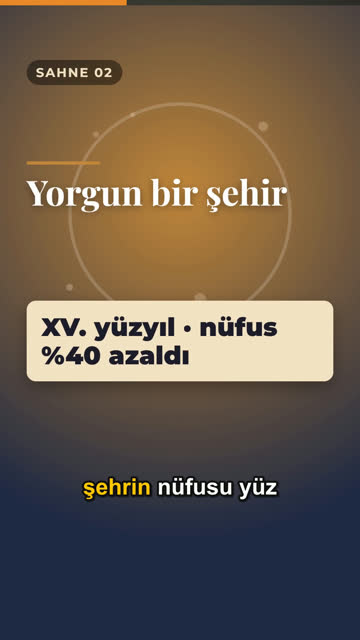
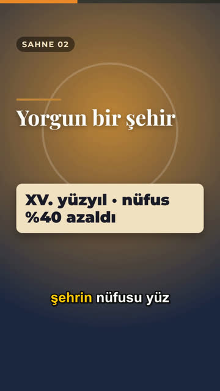
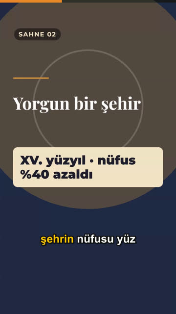
Hafif yerel ses (CPU)
HyperFrames, görsel kapalı. Ajan uv'yi ve motorun Python ortamını kendisi kurdu (kullanıcı makinesindeki gibi).
| Yöntem | Durum | Süre | Render | VRAM | Denetim | Düzeltilen |
|---|---|---|---|---|---|---|
| Supertonic 3 (taban) | Geçti | 31,27 sn | 80,2 sn | CPU (ONNX) | WR 0.865; ses aşaması 7,4 sn | – |
| Piper DFKI | Düzeltildi · geçti | 26,41 sn | 628,2 sn soğuk | CPU | WR 0.808; tepe 0 dBFS (birkaç örnek) | uv yoksa düşüyordu; uv dosya kilidi |
| Piper Fahrettin | Düzeltildi · geçti* | 23,27 sn | 87,1 sn | CPU | WR 0.769; *koşucunun 25 sn alt sınırı dışında (ses hızlı) | Ses 404 veriyordu → ayna yedeği |
| Piper Fettah | Geçti | 28,50 sn | 105,3 sn | CPU | WR 0.731; tüm denetimler | (ayna yedeğiyle) |
| MMS-TTS Türkçe | Düzeltildi · geçti* | 34,37 sn | 93,4 sn | CPU | WR 0.673; *isteğe bağlı 0.70 eşiğinin altında | Noktalama ve İ/I harfleri |
| EMA Lightning | Geçti* | 23,00 sn | 240,2 sn soğuk | CPU | WR 0.827; *25 sn alt sınırı dışında (ses hızlı) | – |
| Ahenk Cep | Geçti | 25,32 sn | 193,6 sn soğuk | CPU | WR 0.846 (hafiflerin en iyisi); hız ayarını yok sayar | – |
| Trendyol-TTS | Atlandı | – | – | ≥8 GB VRAM | Motor kendisi 8 GB istiyor | – |
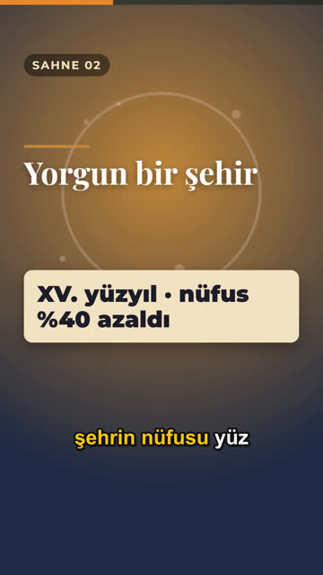
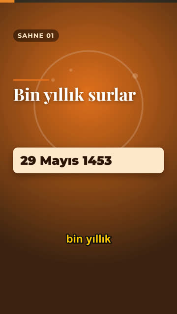
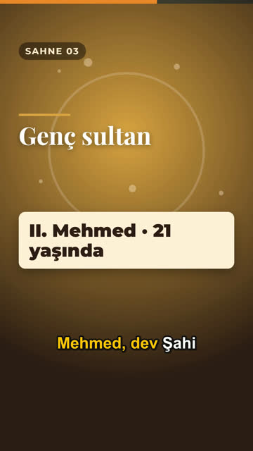
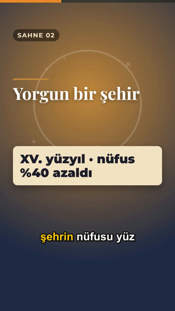
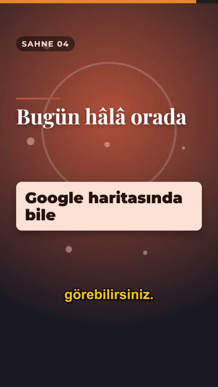
GPU yerel ses
HyperFrames, görsel kapalı. VRAM sütunu OBS vb. dahil toplam tepedir. GPU ses modeli artık Speech aşaması bitince bellekten çıkarılıyor.
| Yöntem | Durum | Süre | Render | VRAM | Denetim | Düzeltilen |
|---|---|---|---|---|---|---|
| Chatterbox Multilingual | Düzeltildi · geçti* | 23,04 sn | 206,6 sn | 5,7 GB (sınırda) | WR 0.712; *25 sn alt sınırı dışında | setuptools eksikti; VRAM serbest bırakma |
| XTTS-v2 | Düzeltildi · geçti | 31,59 sn | 157,0 sn | 4,5 GB | WR 0.827; tüm denetimler | six eksikti |
| F5-TTS Türkçe | Düzeltildi · geçti | 25,37 sn | 126,7 sn | 3,4 GB | WR 0.712; tüm denetimler | İngilizce klipten klonluyordu (44 sn) → Türkçe referans |
| OmniVoice | Geçti | 25,23 sn | 337,7 sn soğuk | 3,6 GB | WR 0.827; tüm denetimler | – |
| VoxCPM2 | Atlandı | – | – | VRAM taşıyor | GPU'da 6,6 sn ses ≈ 7 dk; CPU'da ağırlık yüklerken çöktü | – |
| Ahenk (tam) | Atlandı | – | – | ≥8 GB | VoxCPM2 tabanı, aynı sınır | – |
| Fish S2 Pro | Atlandı | – | – | ≥12 GB | 11 GB ağırlık; VRAM ve boş RAM'den büyük | – |
| Kokoro (dil koruması) | Düzeltildi | – | 4 sn hata | – | Türkçe yok: kurulumdan önce net Türkçe hata | Önce ~2 GB kurup sonra düşüyordu; web uyarısı eklendi |
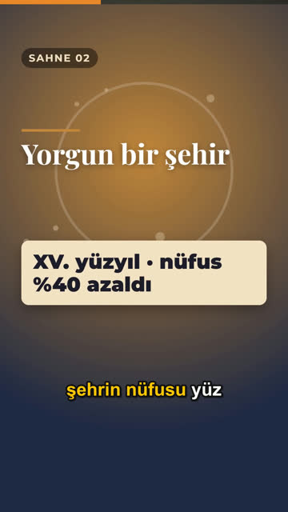
Yerel görsel
HyperFrames + Supertonic 3, sd.cpp (CUDA). Ajan sd.cpp'yi ve modelleri kendisi indirdi. Her görsel tam 1080x1920.
| Model | Durum | Süre | Render | VRAM | Denetim | Düzeltilen |
|---|---|---|---|---|---|---|
| FLUX.2 klein 4B | Düzeltildi · geçti | 31,27 sn | 214,4 sn | Standard, ~5,3 GB boşta | ~29 sn/görsel; WR 0.827 | 1088x1920 geliyordu → tam boyuta kırpma |
| SDXL-Lightning | Düzeltildi · geçti | 31,27 sn | 168,5 sn | Standard + offload | ~12 sn/görsel; WR 0.769; top hâlâ sütun gibi (model zayıflığı) | 2 MP'de iki sultan → 768x1344 üret + büyüt |
| Z-Image Turbo | Geçti | 31,27 sn | 461,0 sn | Standard, ~4,7 GB kullanım | ~80 sn/görsel; WR 0.846 | – |
| SD3.5 Medium | Geçti | 31,27 sn | 498,0 sn soğuk | Standard | ~65 sn/görsel; WR 0.865 | – |
| FLUX.3 Klein (Q4_K) | Geçti | 31,27 sn | 571,1 sn soğuk | Reduced, tepe 5,6 GB | ~92 sn/görsel; en iyi istem uyumu; WR 0.846 | Katalog 8 → 6 GB |
| FLUX.2 klein 9B (Q4_0) | Geçti | 31,27 sn | 595,3 sn soğuk | Reduced, ~3,6 GB sınır; ~5 GB boş RAM | ~88 sn/görsel; Whisper koşulmadı | Katalog 8 → 6 GB |
| Qwen-Image | Atlandı | – | – | ≥12 GB | En küçük Q2_K 7 GB + 4,7 GB kodlayıcı | – |
| Görsel kapalı | Geçti | 31,27 sn | 72,8 sn | GPU gerekmez | 0 görsel; koddan çizim | – |
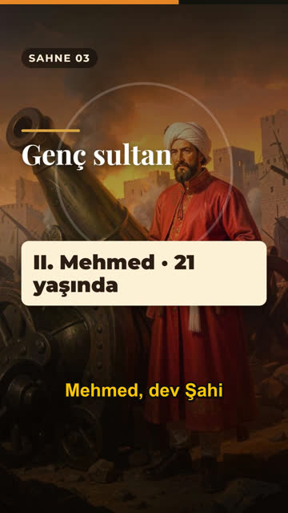
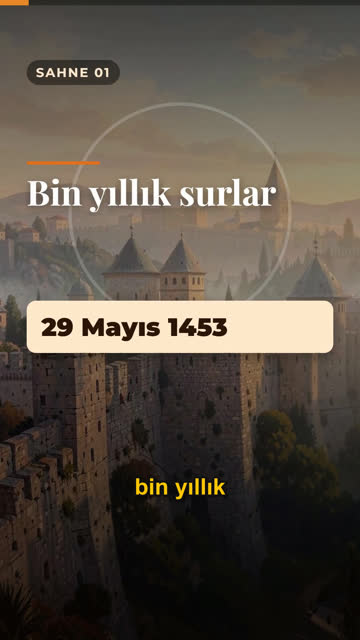
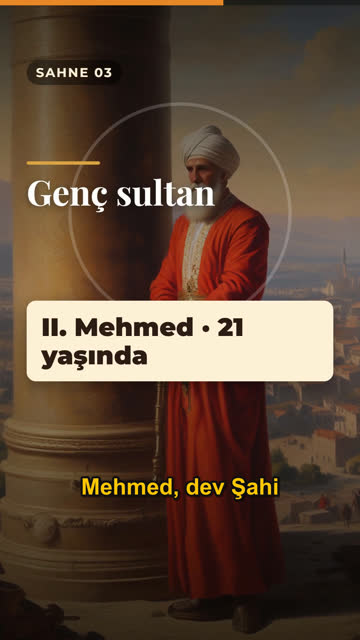
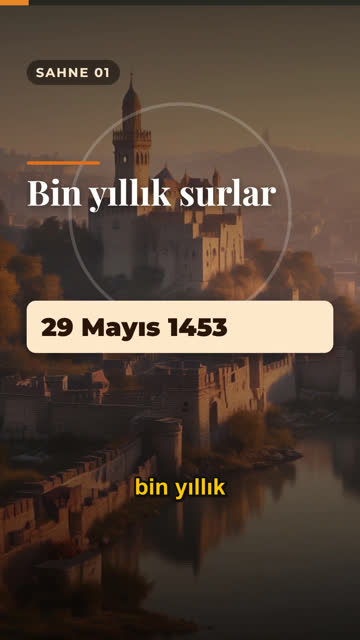
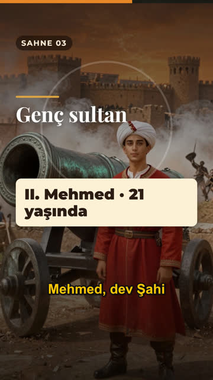
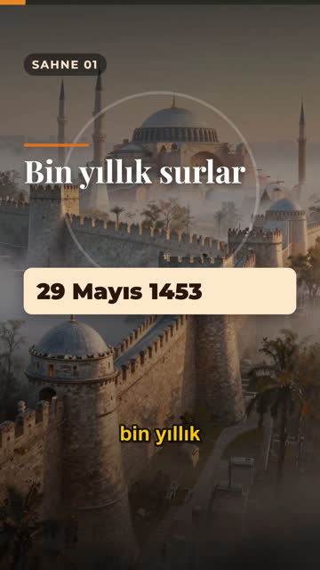
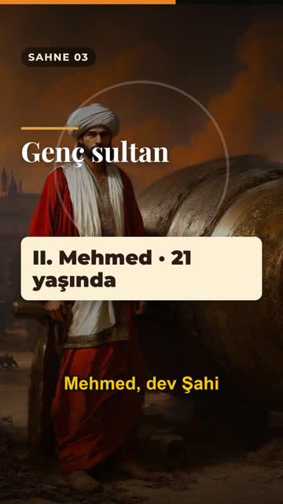
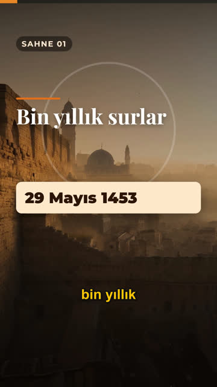
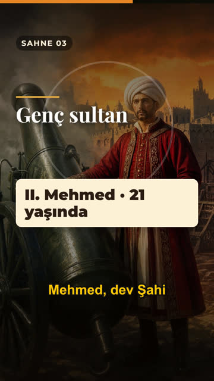
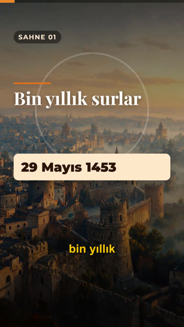
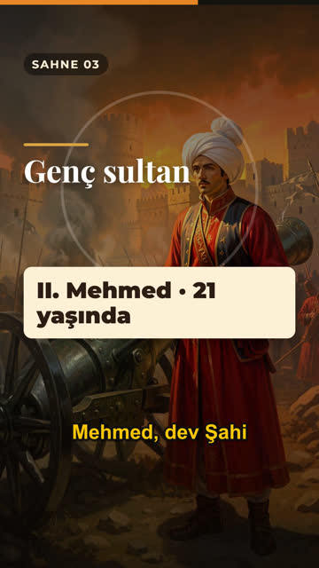
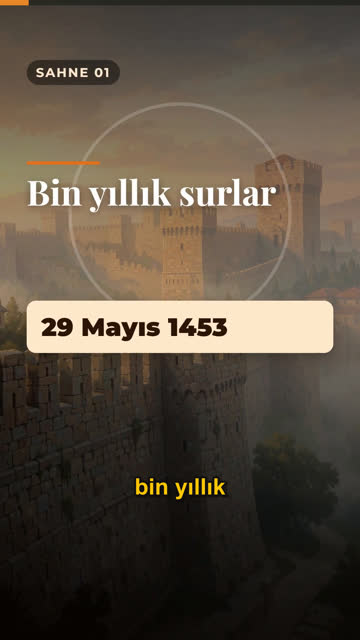
Düzeltilen hatalar
16 hata; her biri testle korundu ve düzeltmeden sonra yöntem yeniden koşuldu.
- HyperFrames görselli sahneyi reddediyordu (
missing_local_asset): doğrulama klasörüne yalnız index.html yazılıyordu; görseller de kopyalanıyor.c9e84cb - Soluk/yanık renk: Remotion ve Revideo son videosu tam aralıklı (yuvj420p) çıkıyordu; birleştirme artık limited range BT.709'a çeviriyor.
90b9870 - Revideo'da yazı kart dışına taşıyordu: düzen yazı tipleri yüklenmeden hesaplanıyordu; tüm yazı tipleri önceden yükleniyor.
0aae158 - Ajan kapanışta çöküyordu (IAsyncDisposable): servisler DisposeAsync ile kapatılıyor.
38d95d3 - uv yoksa Python sesleri düşüyordu: ajan eksik aracı (uv, Python, node, ffmpeg, chrome) gerektiğinde kendisi kuruyor.
d829f5a - uv Python indirmesi Windows dosya kilidinde düşüyordu (os error 5): iki kez yeniden deneniyor.
982fa39 - Piper Fahrettin ve Fettah 404: resmi depoda artık yoklar; ayna depodan indiriliyor.
98275ae - MMS-TTS tek nefeste okuyor, İ/I harflerini bozuyordu: Türkçe küçük harf + cümle/virgül parçalı sentez.
38bcb98 - Chatterbox yüklenmiyordu:
setuptools<81eklendi.1c6a421 - GPU ses modeli VRAM'de kalıyordu: Speech aşaması bitince bellekten çıkarılıyor (canlıda 4,2 → 2,0 GB).
1c6a421 - Kokoro Türkçe için önce ~2 GB kuruyordu: dil kurulumdan önce denetleniyor, web ayarlarında kırmızı uyarı.
1c6a421,1e1f4b8 - XTTS-v2 yüklenmiyordu: eksik
sixeklendi.c3bbbaf - F5-TTS yavaş ve aksanlıydı (44 sn): İngilizce örnek klipten klonluyordu; 6,7 sn Türkçe referans klip gömüldü.
0788ff0 - Görsel istenen boyutta değildi (1088x1920): her görsel tam boyuta kırpılıp ortalanıyor, gerilmiyor.
b38f42c - SDXL iki sultan çiziyordu: modelin piksel bütçesi içinde (768x1344) üretilip büyütülüyor.
dafb1cb - Test koşucusu 15 dk sonra oturumu kaybediyordu (401): bir kez yeniden giriş yapıyor.
1e1f4b8
Doğrulanmayanlar
- Video motorlarının soğuk kurulumu (üçü de zaten kuruluydu).
- Görselli koşular yalnız HyperFrames ile yapıldı; Remotion/Revideo + görsel denenmedi. Revideo'daki daire opaklığı 0,32 değişikliği ikinci koşuda görüldü.
- Kokoro hata mesajının son metni canlıda koşulmadı (birim testli); web uyarısı tarayıcıda görülmedi.
- Chatterbox ve XTTS modelleri teşhis sırasında indirildi; ses süreleri indirmeyi içermez. FLUX.2 klein 9B için Whisper koşulmadı.
- Altyazısız / ilerleme çubuksuz kombinasyonlar ve online sağlayıcılar bu turda koşulmadı.